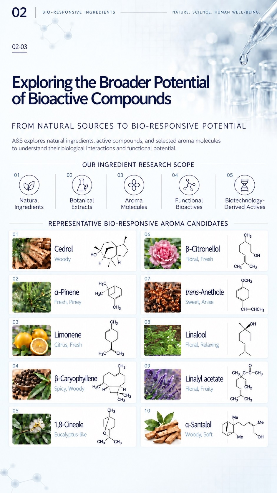
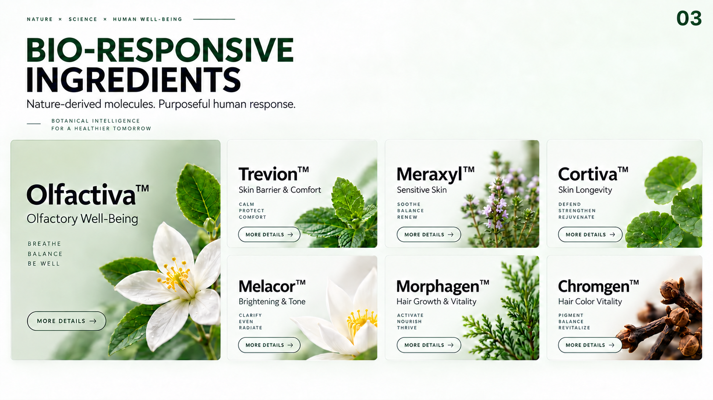
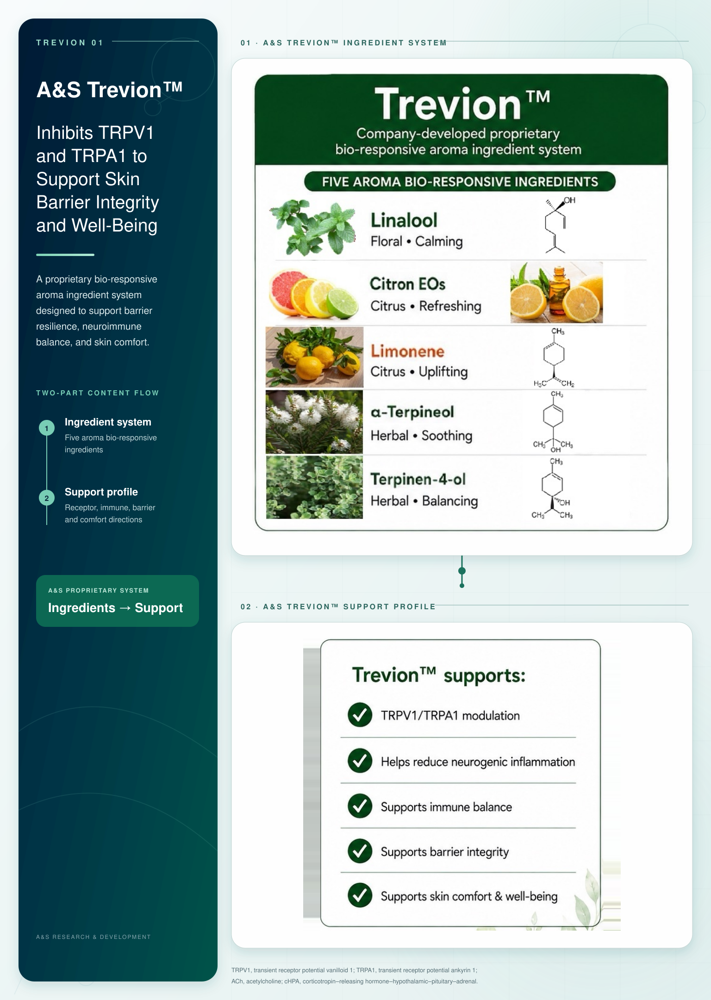
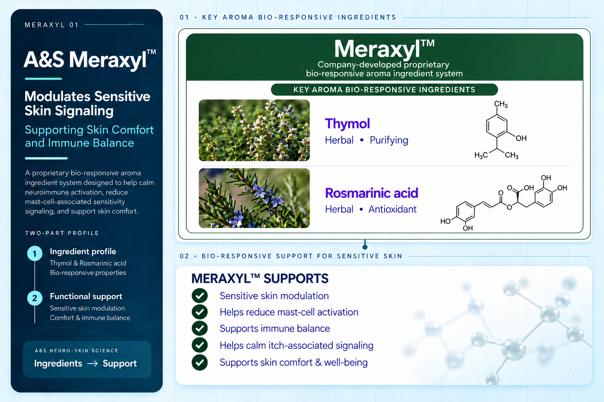
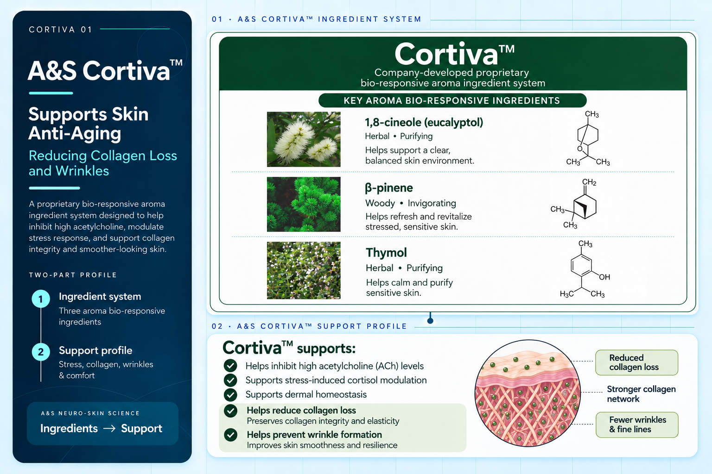
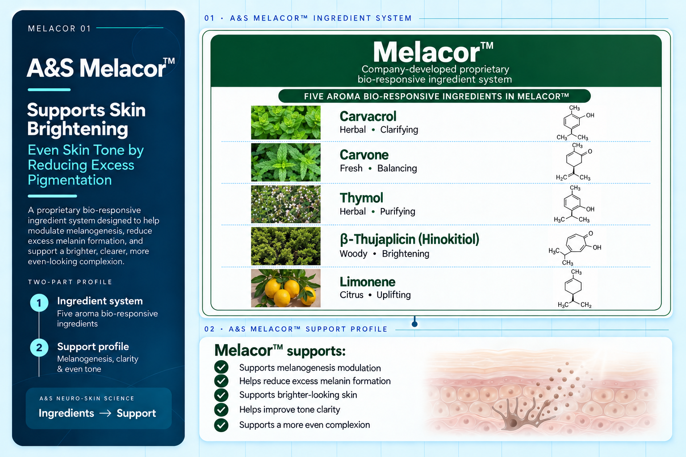
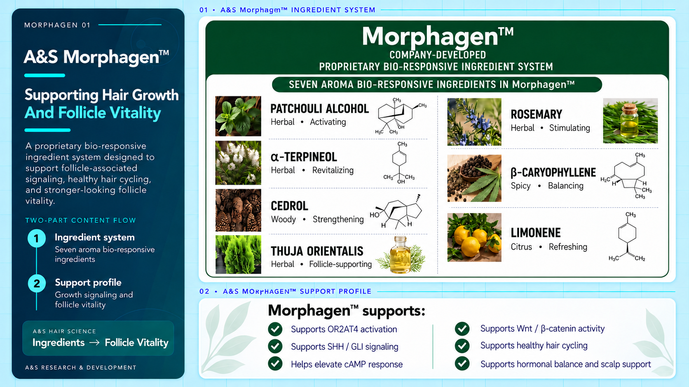
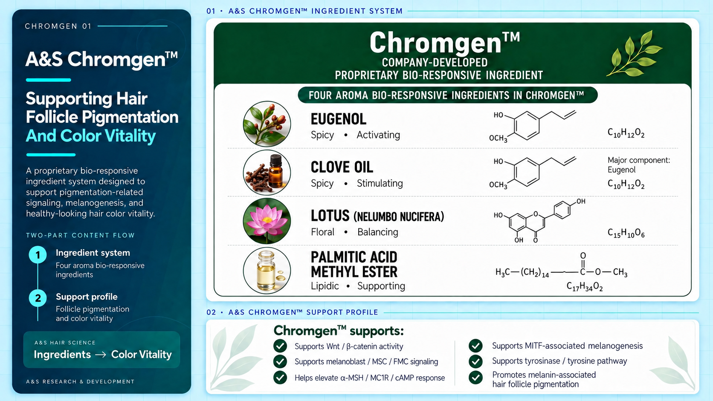
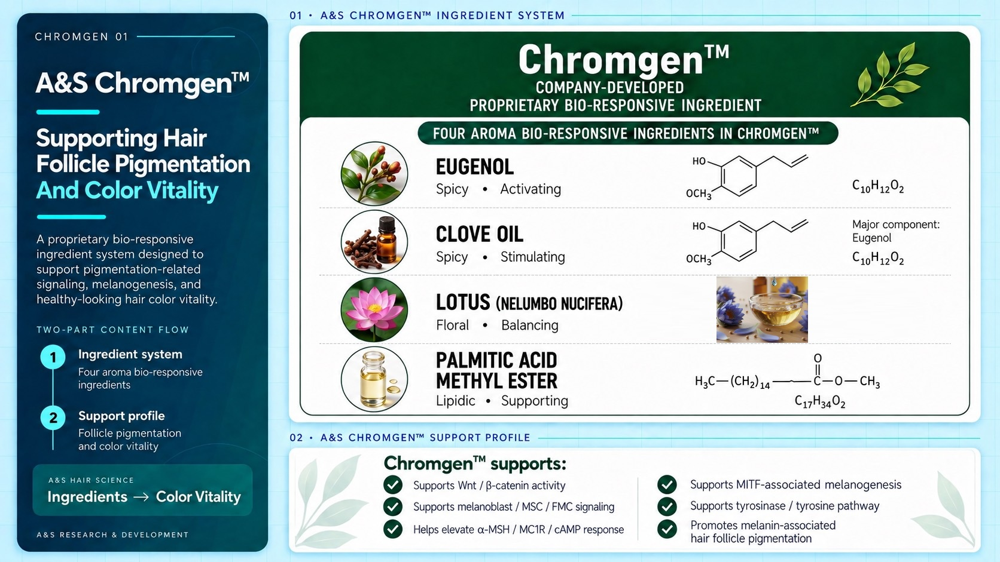

01

INHALATION
Aromatic molecules interact with olfactory and trigeminal receptors, influencing neural and emotional responses.
Key Pathways:Olfactory (CN I)
Trigeminal (CN V)
NATURE. SCIENCE. HUMAN WELL-BEING.
FROM NATURE’S MOLECULES
TO HUMAN POSSIBILITIES
Bio-responsive ingredients are naturally
derived molecules that interact with
sensory receptors, neural pathways,
and biological targets, offering opportunities
for innovative applications in fragrance,
food & beverage, personal care and
beyond.
REAL MOLECULES.
REAL RESPONSES.
A BRIGHTER TOMORROW.

ONE INGREDIENT. MULTIPLE OPPORTUNITIES.
01
Aromatic molecules interact with olfactory and trigeminal receptors, influencing neural and emotional responses.
Key Pathways:Olfactory (CN I)
Trigeminal (CN V)
02

Molecules interact with oral and gastrointestinal sensors, with potential systemic effects.
Key Pathways:Taste Receptors
Gut Epithelium • ENS
03

Molecules interact with skin receptors, supporting cutaneous and neuro-skin responses.
Key Pathways:Cutaneous Receptors
Neuro-Skin Axis
Naturally derived
bioactive compound
Interaction with
biological targets
Transduction via neural
or cellular pathways
Physiological effects
and well-being
NATURAL SOLUTIONS FOR A MORE VIBRANT LIFE.
SCIENCE TODAY, POSSIBILITIES TOMORROW.
From Product Thinking
to Human Response Thinking
A&S studies how ingredients interact with sensory and biological systems—and how those interactions can be translated into meaningful, measurable applications.
MOREWhat is the ingredient?
What function
does it offer?
How is performance
measured?
Where can it be applied?
How is it sensed
by the body?
Which mechanisms
are involved?
What biological
responses occur?
What functional
outcomes can be
supported?
Perception and
sensory interfaces
Biological pathways
and cellular responses
Measurable responses
and functional outcomes
Translating research
into real-world solutions
FROM NATURAL SOURCES TO BIO-RESPONSIVE POTENTIAL
A&S explores natural ingredients, active compounds, and selected aroma molecules to understand their biological interactions and functional potential.
Natural
Ingredients
Botanical
Extracts
Aroma
Molecules
Functional
Bioactives
Biotechnology-
Derived Actives

Woody
Fresh, Piney
Citrus, Fresh
Spicy, Woody
Eucalyptus-like
Floral, Fresh
Sweet, Anise
Floral, Relaxing
Floral, Fruity
Woody, Soft
NATURE SCIENCE HUMAN WELL-BEING.
Nature-derived molecules. Purposeful human response.
BOTANICAL INTELLIGENCE
FOR A HEALTHIER TOMORROW

TrevionTM
Company-developed proprietary
bio-responsive aroma ingredient system

Floral Calming
Citrus Refreshing
Citrus Uplifting
Herbal Soothing
Herbal Balancing
TRPV1, transient receptor potential vanilloid 1; TRPA1, transient receptor potential ankyrin 1;
ACh, acetylcholine; cHPA, corticotropin-releasing hormone-hypothalamic-pituitary-adrenal.
MeraxylTM
Company-developed proprietary
bio-responsive aroma ingredient system

Herbal Purifying
Herbal Antioxidant
CortivaTM
Company-developed proprietary
bio-responsive aroma ingredient system

Herbal Purifying
Helps support a clear, balanced skin environment.
Woody Invigorating
Helps refresh and revitalize stressed, sensitive skin.
Herbal Purifying
Helps calm and purify sensitive skin.
MelacorTM
Company-developed proprietary
bio-responsive aroma ingredient system

Herbal Clarifying
Fresh Balancing
Herbal Purifying
Woody Brightening
Citrus Uplifting
MorphagenTM
COMPANY-DEVELOPED
PROPRIETARY BIO-RESPONSIVE INGREDIENT SYSTEM

Herbal Activating
Herbal Revitalizing
Woody Strengthening
Herbal Follicle-supporting
Herbal Stimulating
Spicy Balancing
Citrus Refreshing
ChromgenTM
COMPANY-DEVELOPED
PROPRIETARY BIO-RESPONSIVE INGREDIENT

Spicy Activating
Spicy Stimulating
Major component: Eugenol
C10H12O2Floral Balancing

Lipidic Supporting